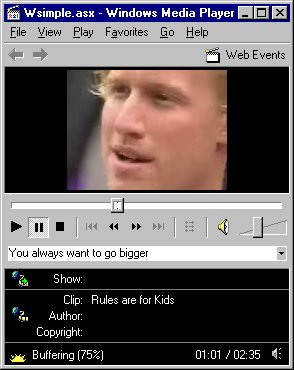
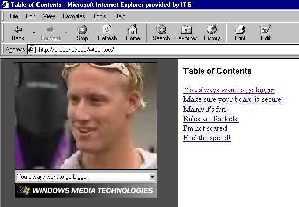
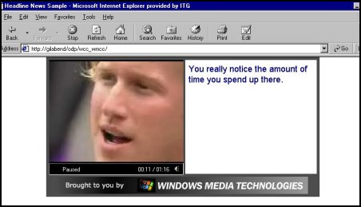
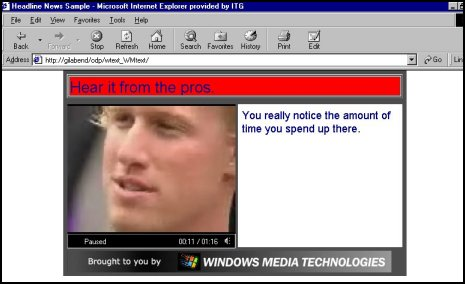

Bill Birney
Microsoft Corporation
June 14, 1999
Contents
Introduction
Tutorial Requirements
Creating Content
Using the Simple Stand-Alone Player Template
Using the Table of Contents Template
Using the URL Flips (Slide Shows) Template
Using the WMClosedCaption Template
Using the WMText Template
Summary
Introduction
Microsoft® Windows Media™ On-Demand Producer includes a host of productivity and processing features. One of these features, the Publish Windows Media Wizard, helps you create all the files necessary to publish content to the Web or an intranet site.
The Publish Windows Media Wizard uses information that you provide to create ASF Stream Redirector (.asx) files, and HTML files for hosting your content. You can use On-Demand Producer to create Advanced Streaming Format (.asf) files, and then immediately see how the files (and the markers and script commands contained in it) play back in a Web page. You can view your ASF content in a number of different ways depending on the HTML template you choose. The following list describes the HTML templates available in On-Demand Producer:
- Simple Embedded Player. This template contains an embedded Microsoft® Windows Media™ Player control. When the Web page opens in a browser, the control plays an .asf file.
- Simple Stand-AloneStand-Alone Player. This template contains a link that points to an .asx file. When the link is clicked, Windows Media Player opens in stand-alone configuration, and plays an .asf file.
- Table of Contents. This template contains an embedded Windows Media Player control, and a frame for holding a table of contents. When the Web page opens, markers contained in the .asf file are listed in the table of contents. When an item in the list is clicked, playback moves to that position.
- URL Flips (Slide Show). This template contains an embedded Windows Media Player control and a frame for holding images. When the Web page opens, script commands contained in the .asf file change the images in synchronization with the media.
- WMClosedCaption. This template contains an embedded Windows Media Player control and an area for displaying text. When the Web page opens, closed-caption text that is contained in script commands populates the text area, and changes in synchronization with the media.
- WMText. This template contains an embedded Windows Media Player control, an area for displaying body text, and an area for displaying headline text. When the Web page opens, script commands populate both text areas.
After creating all your .asf, .asx and HTML files, you can publish (copy) the content directly to Web and Windows Media servers. You can also customize the HTML files to suit your needs: for example, add images, reposition elements, and change colors. To help you edit the HTML files, the scripting contains comments.
This article shows you how to use On-Demand Producer to create Windows Media content that works with the HTML templates provided in the Publish Windows Media Wizard. Use the examples you create to see how the components work together. You can view samples based on each template in the sections describing the templates, below.
Note The samples work optimally over 56 KB modems.
The following requirements describe the content and software you need to use the tutorials in this article.
 Back to top
Back to top
Tutorial Requirements
Content
- An .avi file with voice content
- Several images (each smaller than 16 kilobytes [KB])
Encoding computer
- Windows Media On-Demand Producer
- Windows Media Player version 6.02 or later
- Sound card
Servers
- Windows Media Services
- Web server
Note HTML templates and .asx files should be placed on a Web server, and .asf files should be placed on a Windows Media Services server. Therefore, in the tutorials it is assumed that content is saved to and played back from these sources. However, for testing, content can be played back locally by entering paths instead of URLs.
Client test machine
- Web browser (Microsoft® Internet Explorer version 4.0 or later, or Netscape Navigator version 4.0 or later)
- Sound card
- Windows Media Player 6.02 or later
Back to top
Creating Content
The tutorials in this section describe how to create Windows Media content for each of the HTML templates. There is no separate tutorial for the Simple Embedded Player template because the process of creating content for it is nearly the same as that for the Simple Stand-Alone Player template. The best way to understand how all the pieces work together is to try the tutorials on your own .avi file. So that you can try the closed-captioning template, use an .avi file with voice-over or dialog content.
Each tutorial is divided into four parts:
- Entering post-production settings. Add and edit settings and elements, such as script commands, markers, mark-in and mark-out points, fades, and processing.
- Using the Saving as Windows Media Wizard. Select an encoding template, and encode the .asf file.
- Using the Publishing Windows Media Wizard. Create an ASF Stream Redirector (.asx) file and an HTML file.
- Testing playback. Open the HTML file (Default.htm) and check that playback of the .asf file is as expected.
All four parts are detailed in the Simple Stand-Alone Player tutorial. The other tutorials focus mainly on entering post-production settings, because the saving, publishing, and testing procedures are virtually the same for all tutorials.
The first tutorial begins with On-Demand Producer open in Full view, and an empty project loaded. Each subsequent tutorial builds upon the preceding tutorial. For more information on the views and projects, see On-Demand Producer Help.
Note The tutorials build upon one .avi file. However, you can use a different file for each of the five tutorials, or you can have five different edited versions of the same .avi file. With On-Demand Producer, you can add the same .avi file to a project multiple times. To keep the revisions you make in a tutorial separate from the others, add your .avi file to the project five times.
Using the Simple Stand-Alone Player Template
An HTML file created by using the Simple Stand-Alone Player template contains a link to an .asf file. When the link is clicked Windows Media Player opens in stand-alone configuration, and plays the file. The following process describes how to create content to implement the Simple Stand-Alone Player model. To view a sample using this template, click here.
Entering post-production settings
- On the File menu, click Open/Add. Select and open an .avi file.
The file is added to the project, and becomes the active file: the first frame of video appears in the Video display, and the audio waveform and video frame thumbnail images appear in the Audio/Video Display. You can add or edit process and summary information, and set mark-in and mark-out points, though it is not necessary for this tutorial.
- To save the current project, on the File menu, click Save Project. In Save Project, enter a file name, select a location, and then click Save.
Using the Saving as Windows Media Wizard
- On the File menu, click Save as Windows Media, and the Save as Windows Media Wizard opens.
- On the Introduction screen, click Encode current file, and then click Next.
- On the next screen, select an encoding template. In the Template box, click any template that includes video, and then, click Next.
- On the ASF Destination screen, enter a path designating where the encoded file is to be saved on your Windows Media server, such as \\ServerName\asfroot\tutorial. Then, click Finish.
A screen appears that shows encoding progress, and the .asf file is encoded. The time remaining for encoding the current file appears.
- When encoding is finished, locate the .asf file, and rename the file SAPlayer.asf.
On-demand Producer automatically gives encoded files the same root name as the current .avi file. For example, if the current .avi file is Pickle.avi, On-Demand producer names the encoded file Pickle.asf. Because these tutorials use the same .avi file, if you do not rename the .asf files after they are encoded, they are replaced by subsequent tutorials.
Using the Publishing Windows Media Wizard
- On the File menu, click Publish Windows Media, and the Publish Windows Media Wizard opens.
- On the introduction screen of the wizard, click Next.
- On the next screen, enter settings that are used to generate an .asx file. Click the Generate ASX file check box.
- In the Enter the target ASF File Name box, enter SAPlayer.asf.
- In the ASF Server Path box, enter the URL of the .asf file on your Windows Media Services server, leaving off the .asf file name. For example: mms://YourWindowsMediaserver/tutorial/.
- To help organize information on your Web server, create a folder named ASX, into which you can place the .asx files you create using On-Demand Producer.
- In the Destination directory for ASX file box, enter a path designating where the .asx file is to be saved on your Web server, such as \\Webserver\Inetpub\wwwroot\ASX\.
When you open an On-Demand Producer wizard, the initial settings are carried over from the last time you used the wizard. Therefore, in tutorials that follow, the only setting you must change on this screen is the .asf file name. Click Next.
- On the next screen, enter settings that are used to generate an HTML file. Click the Generate HTML file check box.
The Enter target ASX File Name box contains the name of the .asx file created on the previous screen. The .asx file is named using the root of the .asf file. Normally, this name does not need to be changed.
- In the URL to ASX file box, enter the URL that points to the .asx file you created on the previous screen, leaving off the name of the file. For example: http://YourWebServer/ASX/.
- In the Select HTML Template box, click Simple Stand-Alone Player.
- In the Destination directory for HTML file box, enter a path designating where the folder containing HTML elements is to be saved on your Web server, such as \\Webserver\Inetpub\wwwroot\Odp\.
An HTML folder that is created using the Publish Windows Media Wizard contains Default.htm and any other required elements, including HTML files used in frames, applets, and any image files. The name of the HTML folder is composed of the .asf file root name, followed by an under score character, and ending with an abbreviation of the HTML template that is used. For example: SAPlayer_sa.
- To create the .asx file and the HTML folder containing all the necessary elements, click Finish.

Figure 1. Playback using the Simple Stand-Alone Player template
Testing Playback
- Open your Internet browser, and enter the URL of the Default.htm file. For example: http://YourWebServer/Odp/SAPlayer_sa.default.htm.
- Click Start the Netshow presentation in the stand-alone player.
The link on the Web page points to SAPlayer.asx. When you click the link, Windows Media Player opens and connects to SAPlayer.asf on your Windows Media Services server by using the URL contained in SAPlayer.asx. After the file begins streaming, check to see if summary text, processing, and any other post-production settings you entered are reflected correctly in the playback.
Back to top
Using the Table of Contents Template
An HTML file created by using the Table of Contents template contains an embedded Windows Media Player control, and a scrollable frame displaying a table of contents. Scripting in the HTML file creates the table of contents by reading the list of markers contained in the .asf file. The following process describes how to create the content to implement the Table of Contents template. To view a sample using this template, click here.
Entering post-production settings
- The sample .avi file should still be open. If it is not, open the project that you saved from the Using the Simple Stand-Alone Player Template tutorial to display the .avi file.
- Play the file, and at each change in topic, press the M key. A marker is placed on the marker bar of the edit timeline each time the key is pressed.
- Right-click the first marker icon, and then click Edit in the shortcut menu. The Marker Properties dialog box appears. You can also use this shortcut menu to remove a marker.
- Type a title for the marker in the Name box, and then click OK.
- Repeat steps 3 and 4 for each marker.
- If necessary, adjust the timing of the markers by dragging the icons to new positions along the marker bar. You can also enter times manually in the Marker Properties dialog box, or by opening the Edit Marker dialog box from the Edit menu.
- On the File menu, click Save Project.
Using the Saving as Windows Media Wizard
Follow the steps in the Using the Simple Stand-Alone Player Template tutorial for encoding an .asf file. Rename the file Table.asf.
Using the Publishing Windows Media Wizard
- On the File menu, click Publish Windows Media, and the Publish Windows Media Wizard opens.
- On the Introduction screen of the wizard, click Next.
- On the following screen, click the Generate ASX file check box.
- In the Enter the target ASF File Name box, enter Table.asf.
All other settings on this screen remain the same.
- Click Next.
- On the next screen, click the Generate HTML file check box.
- In the Select HTML Template box, click Table of Contents.
All other settings on this screen remain the same.
- To create the .asx file and the HTML folder containing all the necessary elements, click Finish.

Figure 2. Playback using the Table of Contents template
Testing Playback
Open your Internet browser, and enter the URL of the Default.htm file. For example: http://YourWebServer/Odp/Table_toc/default.htm. When the Web page opens, the embedded Windows Media Player control connects to Table.asf on your Windows Media Services server by using the URL contained in Table.asx. Scripting in the Web page uses Windows Media Player properties to create a list of markers. The markers appear in a frame as a table of contents. Clicking an item in the list causes the .asf file to be played back from that marker position.
Back to top
Using the URL Flips (Slide Shows) Template
An HTML file created by using the URL Flips (Slide Show) template contains an embedded Windows Media Player control, and a frame for displaying images triggered by script commands. To view a sample using this template, click here.
The following process describes how to create the content to implement the URL Flips model.
- The sample .avi file should still be open. If it is not, open the project that you saved from the Using the Simple Stand-Alone Player Template tutorial to display the .avi file.
- Choose JPEG or GIF images to use with the media, and note the names of the files. The image file sizes must be less than 16 KB to minimize download time and disruption of playback.
- Play the .avi file, and press the C key each time you want an image to be changed. A script command is placed on the script command bar of the edit timeline each time the key is pressed.
- Right-click the first script command icon, and then click Edit in the shortcut menu. The Script Command Properties dialog box appears. You can also use this shortcut menu to remove a script command.
- In the Parameter box, enter the file name of the image that you want to appear at that point.
When the encoded .asf file is played back and the script command is received, the process of downloading the image to the image frame begins. The larger the image size and smaller the bandwidth, the longer it takes to display the image. You can experiment with the timing of the script command to compensate for download time.
- In the Type box, click URL, and then click OK.
- Repeat steps 4, 5, and 6 for each script command.
- If necessary, adjust script command timing by dragging the icons to new positions along the script command bar. You can also enter times manually in the Script Command Properties dialog box, or by opening the Edit Command dialog box from the Edit menu.
- On the File menu, click Save Project.
Using the Saving as Windows Media Wizard
Follow the steps in the Using the Simple Stand-Alone Player Template tutorial for encoding an .asf file. Rename the file URLFlip.asf.
Using the Publishing Windows Media Wizard
- On the File menu, click Publish Windows Media, and the Publish Windows Media Wizard opens.
- On the Introduction screen of the wizard, click Next.
- On the next screen, click the Generate ASX file check box.
- In the Enter the target ASF File Name box, enter URLFlip.asf.
Do not change any other settings on this screen.
- Click Next.
- On the next screen, click the Generate HTML file check box.
- In the Select HTML Template box, click URL Flips (Slide Show).
Do not change any other settings on this screen.
- To create the .asx file and the HTML folder containing all the necessary elements, click Finish.
- Locate the HTML folder, and copy the image files into it.

Figure 3. Playback using the URL Flip (Slide Show) template
Testing Playback
Open your Internet browser, and enter the URL of the Default.htm. For example: . When the Web page opens, the embedded Windows Media Player control connects to URLFlip.asf on your Windows Media Services server by using URLFlip.asx. As the file plays, script commands change the images in the frame on the right side of the Web page.
When a script command is received with type URL, the Windows Media Player control passes the parameter string of the script command to the browser. If the parameter string is an absolute URL, such as , the browser moves to that address. If the string is a relative URL, such as Image.jpg, the browser looks for the content in the current location, which in this case is the URLFlip_URL folder.
Normally when a browser receives an URL flip, the entire Web page changes. To force the URL flip to occur only in a particular frame, scripting is added by the URL Flip (Slide Show) template that sets the Windows Media Player control DefaultFrame property. Default.htm contains two frames: slide and player. The player frame contains Player.htm, which contains the Windows Media Player object tag. In Player.htm, the DefaultFrame property is set to slide. Therefore, when the Windows Media Player control receives a script command containing the URL of an image file, the URL is passed to the slide frame.
Back to top
Using the WMClosedCaption Template
An HTML file created using the WMClosedCaption template contains an embedded Windows Media Player control, and an area for displaying closed-caption text triggered by script commands. To view a sample using this template, click here.
The following process describes how to create the content to implement the WMClosedCaption model.
Entering post-production settings
- The sample .avi file should still be open. If it is not, open the project that you saved from the Using the Simple Stand-Alone Player Template tutorial to display the .avi file.
- To add a script command at the beginning of each sentence, play the file, and press the C key.
- Right-click the first script command icon, and then click Edit in the shortcut menu. The script command Properties dialog box appears.
If icons become crowded on the script command bar, you can locate a command by using the Edit Command dialog box. On the Edit menu, click Commands. Click a command in the list, then click Edit, and the Script Command Properties dialog box opens.
- In the Parameter box, transcribe the sentence that follows the script command.
- In the Type box, click WMClosedCaption, and then click OK.
- Repeat steps 3, 4, and 5 for each script command.
- If necessary, adjust script command timing by dragging the icons to new positions along the script command bar. You can also enter times manually in the Script Command Properties dialog box, or by opening the Edit Command dialog box from the Edit menu.
- On the File menu, click Save Project.
Using the Saving as Windows Media Wizard
Follow the steps in the Using the Simple Stand-Alone Player Template tutorial for encoding an .asf file. Rename the file ClosedCap.asf.
Using the Publishing Windows Media Wizard
- On the File menu, click Publish Windows Media, and the Publish Windows Media Wizard opens.
- On the Introduction screen of the wizard, click Next.
- On the next screen, click the Generate ASX file check box.
- In the Enter the target ASF File Name box, enter ClosedCap.asf.
Do not change any other settings on this screen.
- Click Next.
- On the next screen, click the Generate HTML file check box.
- In the Select HTML Template box, click WMClosedCaption.
Do not change any other settings on this screen.
- To create the .asx file and the HTML folder containing all the necessary elements, click Finish.

Figure 4. Playback using the WMClosedCaption template
Testing Playback
Open your Internet browser, and enter the URL of the Default.htm file. For example: http://YourWebServer/Odp/ClosedCap_WMCC/default.htm. When the Web page opens, the embedded Windows Media Player control connects to ClosedCap.asf on your Windows Media Services server by using ClosedCap.asx. As the file plays, script commands display closed-caption text in the area to the right of the Windows Media Player control. An applet, which is included in the HTML folder, is used to display the text.
Back to top
Using the WMText Template
An HTML file created by using the WMText template contains an embedded Windows Media Player control, and areas for displaying headline and body text triggered by script commands. The following process describes how to create the content to implement the WMText model. To view a sample using this template, click here.
Entering post-production settings
- The sample .avi file should still be open. If it is not, open the project that you saved from the Using the Simple Stand-Alone Player Template tutorial to display the .avi file.
- On the Edit menu, click Command, and the Edit Command dialog box opens.
To save time, the closed-caption script commands from the Using the WMClosedCaption Template tutorial are used to populate the body text area.
- Select the first command that contains the type WMClosedCaption, and click Edit. The Script Command Properties dialog box open.
- In the Type box, click WMBodyText, and then click OK.
- Repeat steps 3 and 4 to change all WMClosedCaption commands to the WMBodyText type.
- To add a script command at points where you want headline text to change, play the file, and press the C key.
Headline text appears in a box that holds a single row of approximately 50 characters. To change font size and display colors, you can access properties of the applet that is used to display body and headline text. After the HTML elements are created, edit the properties in Default.htm.
- Right-click the first headline script command icon, and then click Edit in the shortcut menu. The Script Command Properties dialog box appears.
If icons become crowded on the script command bar, you can locate a command using the Edit Command dialog box.
- In the Parameter box, type headline text.
- In the Type box, click WMTextHeadline, and then click OK.
- Repeat steps 7, 8 and 9 for each headline command.
- If necessary, adjust script command timing by dragging the icons to new positions along the script command bar. You can also enter times manually in the Script Command Properties dialog box, or by opening the Edit Command dialog box from the Edit menu.
- On the File menu, click Save Project.
Using the Saving as Windows Media Wizard
Follow the steps in the Using the Simple Stand-Alone Player Template tutorial for encoding an .asf file. Rename the file Text.asf.
Using the Publishing Windows Media Wizard
- On the File menu, click Publish Windows Media, and the Publish Windows Media Wizard opens.
- On the Introduction screen of the wizard, click Next.
- On the next screen, click the Generate ASX file check box.
- In the Enter the target ASF File Name box, enter Text.asf.
Do not change any other settings on this screen.
- Click Next.
- On the following screen, click the Generate HTML file check box.
- In the Select HTML Template box, click WMText.
Do not change any other settings on this screen.
- To create the .asx file and the HTML folder containing all the necessary elements, click Finish.

Figure 5. Playback using the WMText template, with headline box background color changed to red
Testing Playback
Open your Internet browser, and enter the URL of the Default.htm file. For example: http://YourWebServer/Odp/Text_WMTest/default.htm. When the Web page opens, the embedded Windows Media Player control connects to Text.asf on your Windows Media Services server by using Text.asx. As the file plays, script commands display body text in the area to the right of the Windows Media Player control, and headline text in the area above the control. An applet, which is included in the HTML folder, is used to display the text.
Summary
To publish your .asf, .asx, and HTML files, create the content, and test it in a local environment. Then copy all elements to your Web and Windows Media Services servers that are connected to the Internet or intranet. To help ensure that local testing is accurate, mirror the folders and files in both environments, and use relative URLs in your HTML scripting.
Issues that arise when publishing streaming content often concern URLs. By mirroring content and using relative URLs in your Web pages, you can copy content to Internet or intranet servers, and the URLs point correctly. However, when some content must be contained on a different server, absolute URLs are required, and therefore complete mirroring is not possible. This is the case with Windows Media Format content. In the local test environment, the .asx file points to a local Windows Media Services server. In order for the content to appear and play correctly on an Internet or intranet server, the server name and path must be changed in the .asx file. For example, mms://LocalWMS/file.asf must be changed to mms://WebWMS/file.asf.
The Help documentation included with On-Demand Producer describes a method for publishing your media to the final Internet or intranet servers. For more details, see the topic "Transferring Files to the Internet/Intranet" in On-Demand Producer Help.